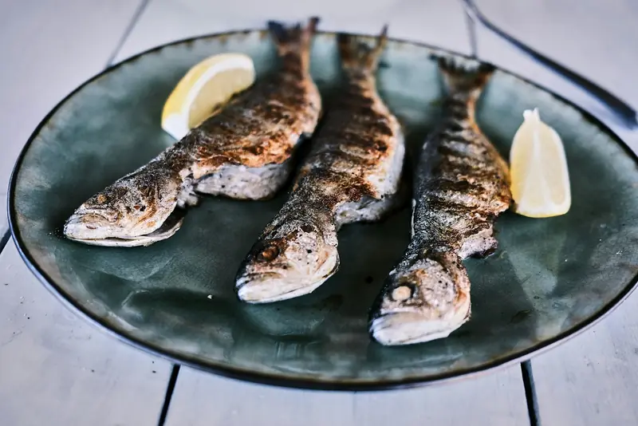
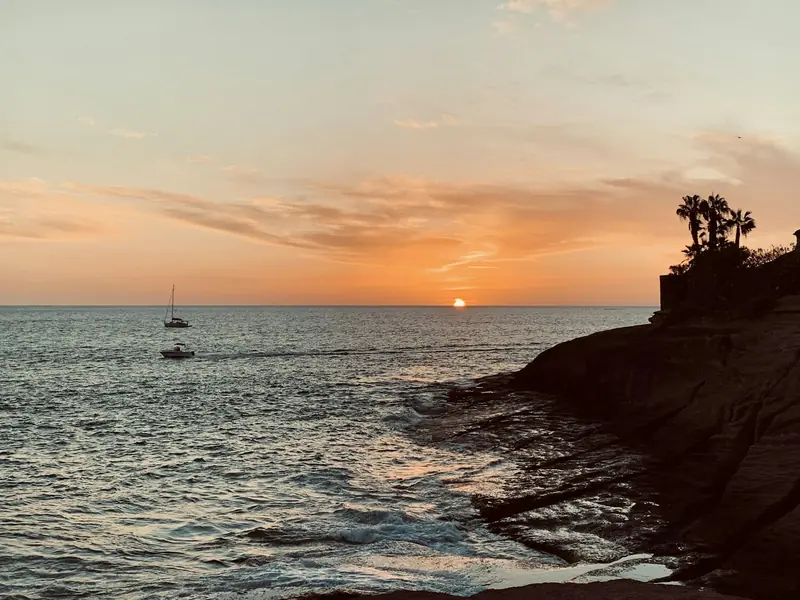

El 27 de octubre el sol se pone a las
Ese día cae al mar, a la izquierda de La Gomera.
Cada tarde la terraza sobre las rocas se llena unos cuarenta minutos, y esos minutos cambian de hora cada día. Reserven la mesa de esa hora: se la guardamos media hora.
Mediodía, a la sombra
Se come bajo el toldo, con el mar a un paso, de 12:30 a 16:00. Pescado del día, lapas, papas arrugadas: lo de aquí, sin prisa.

De la cocina
- Pescado del día a la salpor kilo, para compartir58 €
- Vieja sancochadacon papas y mojo19 €
- Cherne a la plancha22 €
- Lapas con mojo verde13 €
- Pulpo a la brasa18 €
- Arroz caldoso de mariscopara dos42 €
- Ceviche de pescado del día15 €
- Papas arrugadas6 €
Precios de ejemplo.
El 27 de octubre cae al mar, a la izquierda de La Gomera.
La luz dorada empieza hacia las 17:54 (aprox.). El sol toca el agua a las 18:26 y queda claridad hasta las 18:50. La mesa se la guardamos media hora.
Reservar mesa al atardecerLa noche, en la barra
Cócteles hasta las 24:00, y la cocina vuelve de 18:30 a 22:30. Cuando se va la luz, se encienden las bombillas del toldo.
Mañana, otra vez
El 28 de octubre el sol se pone a las 18:26, y el 29, a las 18:25. Cambia un poco cada día, y aquí se lo decimos.

- Dirección
- Paseo de La Caleta 3, 38679 La Caleta, Adeje · al final del paseo marítimo, sobre las rocas · dirección de ejemplo
- Horario
- Todos los días, de 12:30 a 24:00. Cocina de 12:30 a 16:00 y de 18:30 a 22:30.
- Contacto
- +34 922 000 000 · ocaso@ejemplo.es